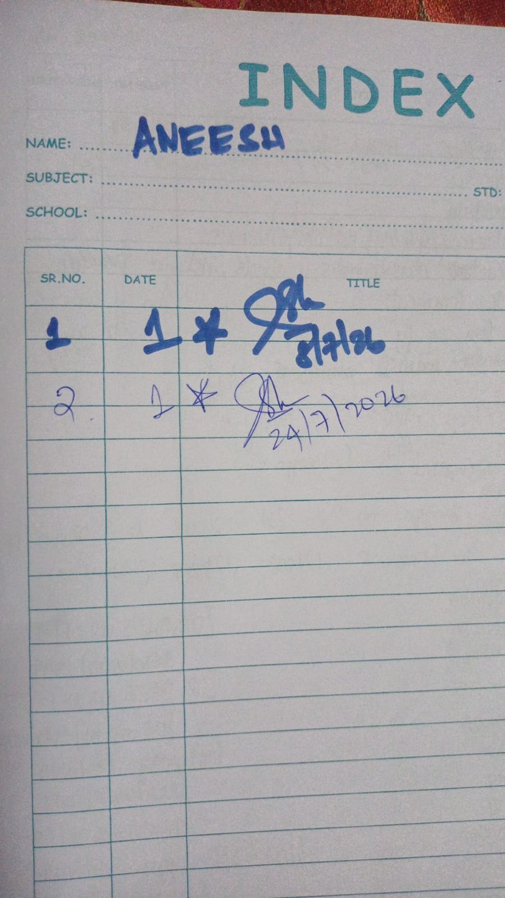
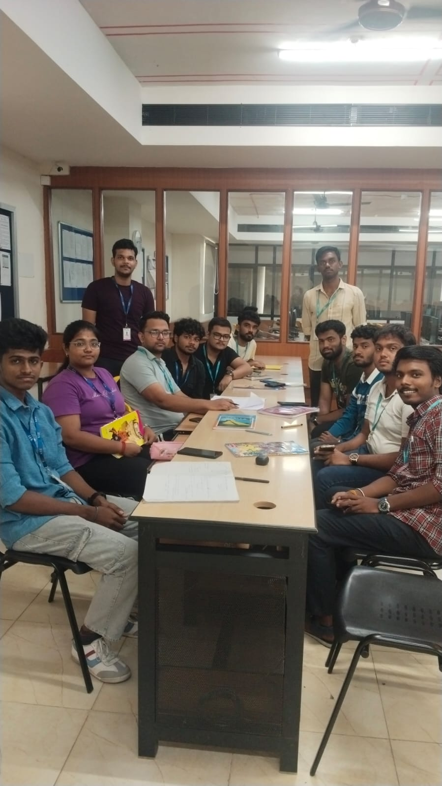
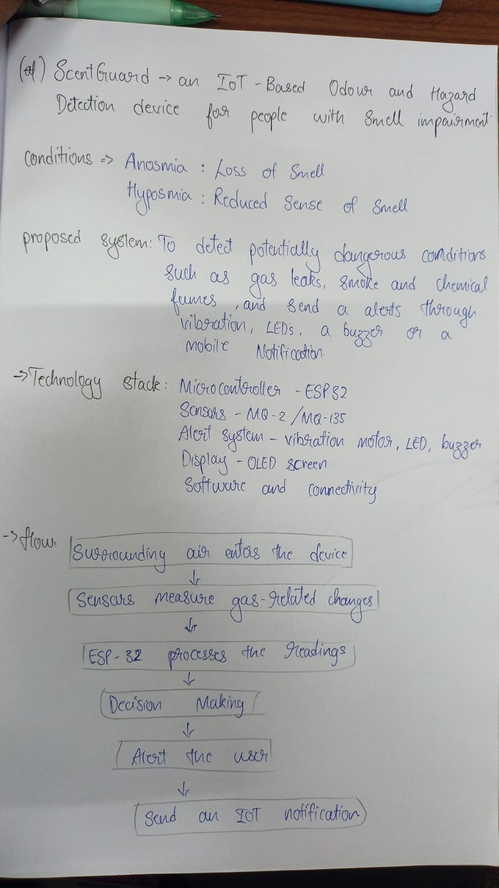
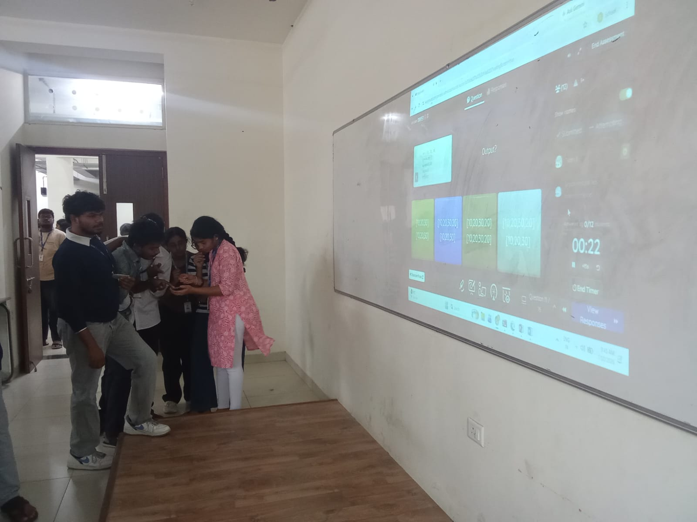
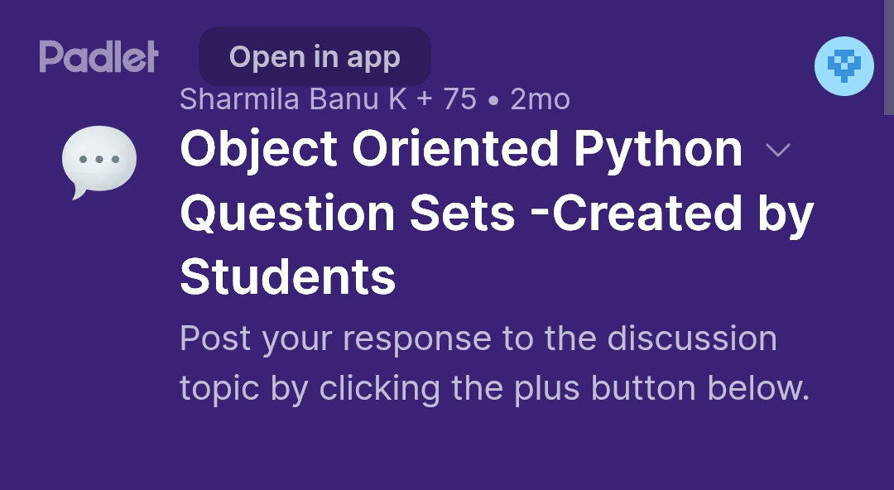
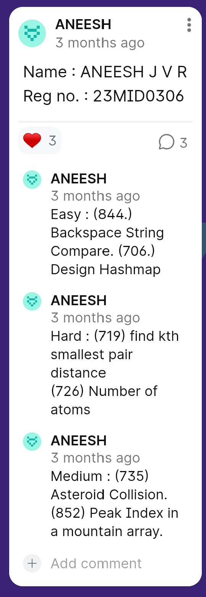
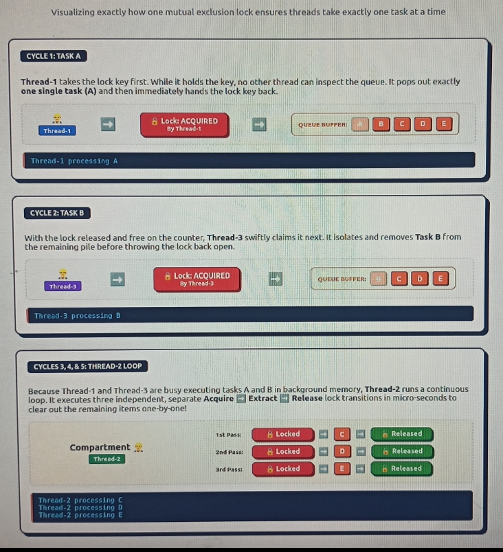

COURSE JOURNALCourse record
Portfolio index
The opening record of my course portfolio, organizing the activities and learning evidence collected throughout the semester.
View photographAdvanced Python Programming · 2026
Aneesh J V R · VIT Vellore
I began this course as a basic Python learner. This portfolio gathers the projects, class activities, experiments, and reflections from the journey that followed.



An Integrated M.Tech student exploring how programming can turn ideas into useful experiences.
class LearningJourney:
def __init__(self):
self.curiosity = True
self.skills = [
"Python"
,
"Problem solving"
,
"IoT concepts"
]
def build(self, idea):
return idea + " in code"
This portfolio documents my learning journey in Advanced Python Programming—from collaborative classroom activities and problem-solving practice to an IoT concept and a web project.
Snapshots of practice, collaboration, and project development.

COURSE JOURNALThe opening record of my course portfolio, organizing the activities and learning evidence collected throughout the semester.
View photographA collaborative classroom session focused on discussing concepts, sharing approaches, and learning from peers.
View photoAn assistive concept for people with smell impairment. ESP32 and gas sensors detect potential hazards and trigger alerts through vibration, LEDs, a buzzer, or mobile notifications.
View concept notesParticipating in an interactive quiz activity to reinforce concepts and check understanding in a fast-paced format.
View quiz photo
PEER LEARNINGStudent-created question sets encouraged peer learning and discussion around object-oriented programming.
View prompt
CODING PRACTICEMy submitted practice set covered Easy, Medium, and Hard problems, including string comparison, hash maps, pair distance, and array peaks.
View questions“I came in learning Python. I left learning what I’m capable of.”ANEESH J V R ↗
A reflection on the challenges, the growth, and the teacher who helped make difficult ideas feel understandable.
Read my story
CONCURRENCYA visual explanation of how a mutual exclusion lock protects a shared task queue so threads extract one task at a time.
View storyboardProject report describing the motivation, existing gap, architecture, technology stack, dataset, API integration, users, inputs, outputs, and references.
Read project writeupBusiness thesis audio submitted as part of the website activity.
Download audioPresentation material included with the portfolio submission.
Download PowerPointSee the website walkthrough and demonstration.
These activities helped me connect programming concepts with practical problem solving, teamwork, and communication. From classroom discussions and coding challenges to exploring an IoT assistive concept, each experience added a different perspective to my learning.
This portfolio is a living record of my progress—and a reminder to keep experimenting, building, and improving.
Read my personal blog